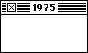
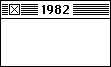

1954Born in Ithaca New York on February 5th.1968During a high school internship she was introduced to graphic design and photo typesetting.1975

Earned her B.A. from Mount Holyoke College in Massachusetts.1978Received an M.A. and a Ph.D. from New York University.1982

After working as a curator and sculptor, her high school friend Andy Hertzfeld got her hired at Apple to design icons for the Mac.1986Became the creative director at NeXT when Steve Jobs left Apple, where she hired and worked with Paul Rand.1989Left NeXT and created her own design firm, and worked with companies like IBM, Microsoft, and Facebook.2015Hired by Pinterest as Product Design Lead as her first full-time employment in over two decades.2018Received the AIGA medal on April 20th.2021Hired as Design Architect at Niantic Labs - an AR design firm.